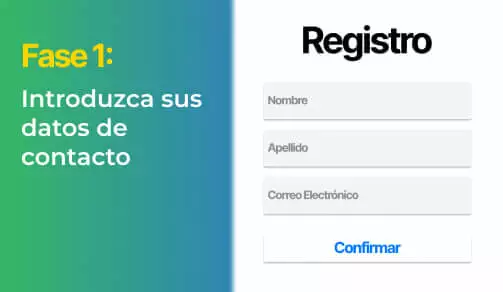
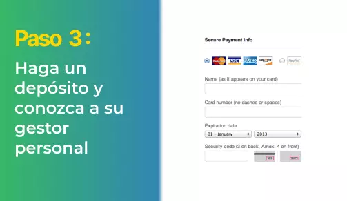
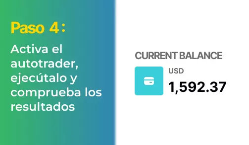

AHORRO Y CONSUMO
INFORME ESPECIAL: la última inversión de Fernando Alonso asombra a los expertos y aterroriza a los grandes bancos
Los españoles ya extraen millones de dólares de esta "laguna dorada", pero ¿es legal?
El Mundo: Fernando Alonso es conocido por no guardar secretos ypor hablar simple y llanamente de como gana su dinero.
La semana pasada fue entrevistado en "El Hormiguero" y anunció una nueva "laguna dorada", que según él, puede convertir en millonario a cualquiera en 3 o 4 meses. Fernando Alonso animó a que todos los españoles se lanzaran a aprovechar esta asombrosa oportunidad antes de que los grandes bancos lo silenciaran definitivamente.
Y, efectivamente, minutos después de que terminara la entrevista, Banco Santander llamó para evitar que la entrevista de Fernando fuera emitida, pero ya era demasiado tarde.
Esto es exactamente lo que pasó:
El presentador de "El Hormiguero", Pablo Motos, invitó a Fernando Alonso al programa para que compartiera sus consejos para aumentar nuestras ganancias y el deportista reveló un gran secreto.
"Mi receta para el éxito siempre ha sido aprovechar las nuevas oportunidades rápidamente y sin vacilar.Y ahora mismo, mi mayor generador de ganancias es un programa de operación automática de criptomoneda llamado Bitcoin Spanish. Es la ocasión más grande que he visto en mi vida de conseguir rápidamente una pequeña fortuna. Les animo a todos a a provecharse antes de que los bancos le pongan freno."
Pablo Motos no daba crédito cuando Fernando Alonso sacó su teléfono y les mostró a los espectadores cuánto dinero está ganando a través de este nuevo programa para ganar dinero.
Su entrevista terminó antes de que pudiera dar más detalles, así que hemos organizado una entrevista exclusiva con Fernando para saber más sobre esta controvertida oportunidad.
EXCLUSIVA DE El Mundo: Fernando Alonso
"Es posible que haya oído hablar de esta nueva plataforma de inversión en criptomonedas llamada Bitcoin Spanish, que está consiguiendo que la gente de a pie en España se hagan de oro de la noche a la mañana. Tiene usted derecho a ser escéptico porque suena demasiado bueno para ser cierto.".
"Lo entiendo porque pensé lo mismo cuando una persona de confianza me lo contó. Pero después de ver con mis propios ojos cuánto dinero estaba ganando, tuve que probarlo por mí mismo.
Me alegro de haberlo probado, porque debe de ser la manera más fácil en que he ganado un montón de dinero en mi vida. Estoy hablando de miles de dollars al día de manera automática. Es, literalmente, la forma más rápida de de obtener unos ingresos extraordinarios en efectivo en este momento. Y no va a durar mucho más, en cuanto se entere cada vez más gente. O en cuanto los bancos le pongan freno."
¿QUÉ ES EXACTAMENTE Bitcoin Spanish Y CÓMO FUNCIONA?
La idea detrás de Bitcoin Spanish es sencilla: permitir que cualquier persona normal se aproveche de las criptomonedas, que siguen siendo la inversión más lucrativa del siglo XXI, a pesar de lo que la mayoría de la gente piensa.
Aunque el precio del Bitcoin haya caído desde su máximo histórico de 20 000 € por Bitcoin, los operadores todavía se siguen forrando. ¿Por qué? Porque existen otros miles de criptomonedas aparte del Bitcoin con las que se comercia cada día con enormes beneficios.
Algunas de estas criptomonedas son Ripple, Ethereum, Monero y Zcash. Todavía están proporcionando beneficios del 10.000% o más a personas españoles corrientes.
Bitcoin Spanish le permite beneficiarse de todas estas criptomonedas, incluso en un mercado a la baja. Utiliza la inteligencia artificial (AI) para gestionar automáticamente las operaciones de compra y venta en corto para que usted gane dinero las 24 horas del día, incluso mientras duerme.
Bitcoin Spanish está respaldado por algunas de las mentes tecnológicas más brillantes que hayan existido. Richard Branson, Elon Musk y Bill Gates, por nombrar algunos.
Estos genios de la tecnología han creado empresas multimillonarias que resuelven problemas complejos como pagos en línea, informática y transporte. Ahora, están abordando el problema global de la desigualdad de la riqueza, para lograr que cualquier persona, sin importar lo pobre o rica que sea, consiga el dinero suficiente para de una vida feliz y satisfactoria.
LUCRATIVO SECRETO PARA GANAR DINERO QUE LOS GRANDES BANCOS NO QUIEREN QUE SEPA
Fernando Alonso prosigue,
"Estamos viviendo en un momento económico difícil, y esta es la solución que la gente ha estado esperando. Nunca antes en la historia hemos tenido una oportunidad tan increíble para que la gente normal pueda ganar tanto dinero en tan poco tiempo.
Hay quien duda en probarlo porque es demasiado diferente. ¡Y eso es porque los grandes bancos están tratando de encubrirlo! Los grandes bancos están creando activamente propaganda y propagando que las criptomonedas y las plataformas como Bitcoin Spanish son una estafa. ¿Por qué? Les preocupa que sus beneficios corporativos se reduzcan una vez que sus clientes sepan cómo generar grandes sumas de dinero por sí mismos.
La verdad es que las criptomonedas son la revolución de nuestros tiempos y cualquiera que no aproveche esta oportunidad se la está perdiendo. Ya he recibido llamadas y amenazas de grandes corporaciones financieras por estar divulgando esta tecnología. Pero que les den. En España ya se está empezando a saber la verdad y es solo cuestión de tiempo que cada vez más personas lo sepan.
Estoy compartiendo esta información porque también he recibido cientos de correos electrónicos de personas agradeciéndome que compartiera este secreto. Mi historia favorita es la de un cariñoso marido que regaló a su mujer el coche de sus sueños utilizando los beneficios de Bitcoin Spanish. Esta plataforma está mejorando realmente la vida de personas de todo el mundo.
¿FUNCIONA REALMENTE Bitcoin Spanish? NOSOTROS HEMOS HECHO LA PRUEBA
Nuestros jefes editoriales no nos permitían. publicar la entrevista con Fernando Alonso hasta que hubiéramos verificado que Bitcoin Spanish es una oportunidad legítima de ganar dinero desde casa. Nuestro La directiva del periódico no quería que divulgáramos ningún dato potencialmente pudiera hacer perder a los españoles su dinero tan duramente ganado.
Así que nuestro equipo editorial probó Bitcoin Spanish para asegurarse de que realmente funcionaba tal y como del Fernando lo había descrito. Uno de nuestros editores de la edición online, Guillermo Correa, se ofreció como voluntario para arriesgar su propio dinero y probar Bitcoin Spanish.
Guillermo, de 53 años, es padre de dos hijos y su mujer perdió el trabajo el año pasado por enfermedad. Admitió que estaba teniendo dificultades financieras y esta oportunidad de inversión podía ser la solución a sus males.
Esto es lo que Guillermo nos cuenta:
"Al principio, cuando escuché la entrevista con Fernando Alonso, pensé que estaba de broma. Ganar dinero desde casa es solo un sueño. Decidí probarlo de todos modos, dadas mis circunstancias financieras y en aras del buen periodismo
Vi un vídeo introductorio sobre la plataforma y luego me inscribí. El vídeo parecía ser demasiado prometedor, pero dejé de lado mi escepticismo. En unas pocas horas, recibí una llamada de mi gestor personal. Respondió todas las preguntas y dudas que tenía, y me aseguró que iba a ganar dinero. Y punto.
Mi gestor personal incluso me prometió que si perdía un solo céntimo, me reembolsaría rápidamente mi depósito de €250. Así estaba de seguro sobre el hecho de que mi vida iba a cambiar. Eso es lo que llamo yo un servicio al cliente excelente, y no es de extrañar que los bancos estén asustados.
Una vez que recibí acceso a la plataforma, deposité mi inversión inicial de €250. Esto es lo que gasta mi familia en comida basura cada mes, así que Eso es más o menos lo que mi familia se gasta cada mes en comida basura, así que decidí dejar de llevarles a esos restaurantes durante un mes. Ahora hemos mejorado nuestra alimentación, además de tener la oportunidad de enriquecernos.
El sistema Bitcoin Spanish en sí mismo es una plataforma de operación automática de criptomonedas. El software utiliza algoritmos avanzados de IA y aprendizaje automático para predecir exactamente cuándo subirán y bajarán las criptomonedas. Entonces automáticamente compra y vende por usted durante todo el día. La tecnología ya ha hecho nuestras vidas más fáciles en todas las formas posibles, así que ¿por qué no usarla también para ganar más dinero?"
LOS RESULTADOS DE GUILLERMO CON EL SISTEMA EN TIEMPO REAL
"A la hora de depositar los €250, el software comenzó a operar por mí. Siendo sincero, estaba nervioso porque pensaba que perdería todo mi dinero. Y por supuesto, ¡perdí €25 en mi primera operación!
Se me hizo un nudo en la garganta. Pensé que me habían estafado. Hasta estuve a punto de llamar a mi gestor personal y pedirle que me devolviera mi dinero. Pero luego recordé lo que me había contado en nuestra charla anterior: que el algoritmo acierta aproximadamente el 80-89 % de las veces. usted no va a ganar con TODAS las operacianes, pero ganará lo suficiente el sistema le resultará rentable en general.
Así que dejé que el software siguiera operando por mí y lo observé de cerca. ¡La siguiente operación salió bien! Sólo €19, pero algo es algo. Y luego gane €51 . Luego, 22, con una suma total de €67 . Y todo esto en menos de 5 minutos.
Pronto empecé recoger ganancias como si fueran churros, y no daba crédito a lo que estaba viendo.
Ahora entiendo por qué Fernando Alonso está siempre de tan buen humor. Y por qué los grandes bancos no quieren que nadie se entere de este nicho para ganar dinero. Mis ganancias al final del día eran de €823: ¡no estaba nada mal para una inversión inicial de €250! Estaba tan emocionado que apenas pude dormir.
El día siguiente era martes y tuve que volver al trabajo. Siendo sincero (y no le digan esto a mi jefe), me resultó difícil concentrarme en mi trabajo sabiendo que el software de Bitcoin Spanish Estaba generando dinero para mí.
Corrí al baño un par de veces para comprobar mis ingresos y vi que seguían acumulándose (con pequeñas pérdidas aquí y allá). Al final del día, antes de acostar a los niños, tenía €1349,13 en mi cuenta. ¡Eso es más de lo que gano en el trabajo!
Al final de la semana, había ganado un total de €5349,12 . Retiré exactamente €4500 y reinvertí el resto. A los 2 días, recibí mi primer cheque por correo, por valor de exactamente €4500. ¡No podía creerme que fuese de verdad"
Guillermo prosigue,
"En estos momentos, estoy ganando constantemente entre 700 y 1500 € al día gracias a Bitcoin Spanish. Ahora, el dinero se deposita en mi cuenta bancaria cada pocos días. Con solo unos clicks, recibo mis fondos a las 24-48 horas. Cada vez que la transferencia llega a mi cuenta corriente, tengo que pellizcarme para asegurarme de que no estaba soñando.
Por suerte, ME ENCANTA mi trabajo aquí porque puedo hacer llegar a la gente reportajes importantes (como este); de lo contrario, ya habría renunciado. Sin embargo, planifiqué unas vacaciones para mi familia en Bali, Indonesia, para celebrar que habíamos acabado con las deudas. ¡Y por fin haber encarrilado la economía familiar!
Esto no sería posible sin la generosidad del Sr del Fernando al compartir su secreto en directo en televisión. Y me alegro de haber corrido el riesgo de probar Bitcoin Spanish por mí mismo. Mi mujer está más feliz que nunca y el armario de juguetes de mis hijos está bien surtido.
Mis compañeros de trabajo se están tirando de los pelos, porque no se registraron hace dos semanas como yo. Pero enseguida se han apuntado todos (incluído mi jefe), y ahora me llaman "héroe" por haberlo probado."
CÓMO EMPEZAR CON Bitcoin Spanish (PLAZAS LIMITADAS)
Para comenzar, solo necesita un ordenador, smartphone o tablet con acceso a Internet. hace falta habilidad específica aparte de saber usar un ordenador y navegar por Internet. No necesita ninguna experiencia en tecnología ni en criptomonedas porque el software y su gestor personal le garantizan que conseguirá beneficios.
Otra ventaja de este programa es que puede comenzar cuando quiera. Puede organizar su propio horario, ya sea 5 o 50 horas semanales. Simplemente inicie el software de operación automática cuando lo desee, y podrá ponerlo en pausa cuando prefiera a su gusto (aunque no se me ocurre por qué querría hacer eso).
Para ahorrales tiempo a nuestros lectores y verificar la funcionalidad del sistema, Guillermo se ha prestado amablemente a crear una guía para comenzar a utilizar el sistema.
ESTE ES MI TUTORIAL PASO A PASO:
Lo primero que uno ve es un vídeo que muestra la potencia de Bitcoin Spanish. La publicidad se la publicidad es rimbombante y directa, pero este es un producto estadounidense, y así es como hacen ellos las cosas. De todos modos, simplemente envíe su nombre y dirección de correo electrónico junto al vídeo para comenzar de inmediato.
(Consejo: incluso si no decide invertir dinero, le recomiendo que se registre ahora porque es gratis y los registros para residentes en España pueden terminar en cualquier momento)
A continuación, se le pedirá que deposite fondos en su cuenta. Mientras navegaba por la página de depósito, sonó mi móvil. Era un número internacional, por lo que dudé si responder o no, pero luego me di cuenta de que era obviamente de Bitcoin Spanish.
Era mi propio gestor de cuenta personal. Su atención fue genial. Me llevó a través de todo el proceso de financiación. Aceptan todas las principales tarjetas de crédito como Visa y American Express. Seguí adelante y deposité el importe mínimo que es de 250€.
Una vez introducido mi depósito, navegué hasta la sección del software de "Operación automática", establecí el importe operativo en los 50 € recomendados y lo activé. El software comenzó a operar rápidamente y al principio estaba algo preocupado, pero dejé que fuera a lo suyo.
"Todo el mundo quiere ser rico, pero nadie sabe cómo hacerlo. Bueno, es la oportunidad de su vida para ganar una fortuna que le permitirá vivir la vida que realmente desea. NO estará ahí para siempre, así que no se lo pierda". - Fernando Alonso
ACTUALIZACIONES
Acabamos de recibir noticias de que a partir de hoy ( 20.04.2023) casi todas las plazas se están agotando para los residentes de España. Bitcoin Spanish solo puede aceptar un número limitado de usuarios totales para mantener el beneficio por usuario tan elevado. A partir de ahora, quedan (37) plazas, así que dese prisa y regístrese ahora para asegurar su plaza.